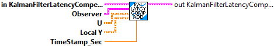
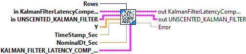
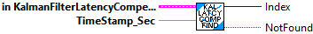
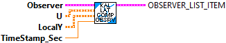

Add past observer states to the observer snapshots list.
Inputs:
- KalmanLatencyComp -- Data cluster
- observer -- The observer. (Uncented Kalman Filter)
- u -- The input matrix at the timestamp.
- localY -- The local output matrix at the timestamp
- timestampSeconds -- The timesnap of the state.
Outputs:
- outKalmanLatencyComp -- updated data cluster
Packs the individual function references and extra data into a cluster to pass to ApplyPastGlobalMeasurements.
Inputs:
- F_Func --
- F_FuncExtra -- variant containing the extra data, if any, required by the F_Func
- H_Func --
- H_FuncExtra -- variant containing the extra data, if any, required by the F_Func
- VisionCorrect_Func --
- VisionCorrectExtra -- variant containing the extra data, if any, required by the VIsionCorrect_Func
Outputs:
- Comp_Func_Group -- Packed data cluster
- Error -- If TRUE, an error occured.

Add past global measurements (such as from vision)to the estimator. This routine is particular for a system that uses an Unscented Kalman FIlter.
Inputs:
- rows -- The rows in the global measurement vector.
- KalmanLatencyComp -- Data cluster
- Unscented Kalman FIlter -- Data cluster for the unscented kalman filter (observer). This is used to recalculate the estimated position from the newly applied measurements.
- y -- The measurement.
- timestampSeconds -- The timestamp of the measurement.
- nominalDtSeconds -- The nominal timestep.
- KALMAN_FILTER_LATENCY_COMP_FUNC_GROUP -- The function references that take calls correct() on the observer.
Outputs:
- outKalmanLatencyComp -- updated data cluster
- outUnscented Kalman FIlter -- updated cluster for the unscented kalman filter (observer).
- Error -- Set to TRUE if an error occured.

An internal function that finds the item in the Past Observer Snapshot list with the timestamp closest to the one passed as an input.
Inputs:
- inKalmanFilterLatencyCompensator -- Data cluster
- TimeStamp_Sec -- Relative robot timestamp of the item to find (Seconds)
Outputs:
- Index -- Integer index to the closest entry
- NotFound -- Boolean, whose value is TRUE if the closest entry was not found.

Creates a new, empty, Kalman Filter Latency Compensator data cluster. The Observer Snapshot list is created empty.
Inputs:
Outputs:
- KalmanFilterLatencyCompensator -- Newly created data cluster.

Creates the Observer List Item data cluster from individual input paramters.
Inputs:
- observer -- The observer. (Uncented Kalman Filter) data cluster
- u -- The input matrix at the timestamp.
- localY -- The local output matrix at the timestamp
- timestampSeconds -- The timesnap of the state.
Outputs:
- ObserverListItem -- Observer List Item data cluster (ready to push onto the list of stored items)

Clears the observer snapshot buffer.
Inputs:
- KalmanLatencyComp -- Data cluster
Outputs:
- outKalmanLatencyComp -- Updated data cluster